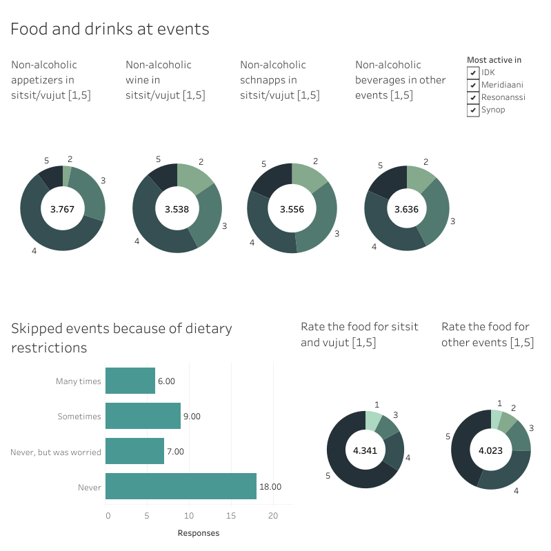

In December last year the equality resposibles of Resonanssi, Meridiaani and Synop conducted a survey about equality, bullying and harassment in the physics student community. Here are the results of the survey. Suomennos löytyy täältä. - June, 2023
The survey was conducted in November and December 2022. We had 67 responses in total from all organisations. The survey was open for almost 5 weeks and it was available in English and Finnish. It was advertised to all students in all three organisations.
The survey consisted of 6 topics: Accessibility, Equality of servings in events, and Equality in the physics community. In the first section questions were asked separately for each organisation, but the rest of the sections' questions regarded the community of all three organisations as a whole. Most questions were posed so that the answers were either Yes/No/Maybe -type or a suitable number on a scale of 0-5.
Everything is colour-coded: shades of pink means the data are associated with Resonanssi, yellow with Synop and blue with Meridiaani. Green is associated with all organisations. The visualisations might not work properly when using a mobile device or cropping the browser window. You can find more information about each dashboard by clicking the 'View caption' button below the dashboard.
Bear in mind that thise results are directive and to be taken with a grain of salt since there were only 67 responses. Most questions were about the community as a whole so even though you can filter answers by organisation, the resulting visualisations may not correspond to one organisation. IDK means I don't know/they didn't answer and IDWS means I don't want to say. If you have any questions, feel free to ask Mara (maria.e.virtanen@helsinki.fi, she/her) who has created these visualisations.
The first pie chart, with title "I'm most active in", shows the distribution of organisations of the respondents. These values are calculated according to the level of activeness and role in each organisation that the respondants reported. IDK stands for "I don't know", meaning that there was no single organisation that the respondent was the most active in. "No. responses" stands for number of responses, the value of which tells the total number of responses correlating to the field. The other charts show the gender distribution, age distribution and starting year distribution of respondents. IDWS stands for "I don't want to say".
Accessibility statements and Registration accessibility and equality show how the respondents agree with the given statemets, 1=strongly disagree and 5=strongly agree. The plotted value is an average value taken over all responses. Accessibility of spaces shows how the respondents rated the accessibility of our most used spaces on a scale [1,5], 1=Not accessible at all and 5=Very accessible. This value is also an average taken over all responses. Lastly, Accessibility of events in general shows how the respondents rated our events' accessibility in general, with the average taken over all responses shown in the middle of the chart.
Events I wish to be organised more shows how many respondents wishes different types of events to be more organised. Starting year of studies and I'm most active in are included to enable interactivity.
The first four donut charts show how the respondents rated non-alcoholic beverages in events from 1 to 5, 1 being bad and 5 being good. An average rating is shown in the middle of each chart. On the lower right corner there are two corresponding charts for food ratings. Lastly, the Skipped events chart shows how many respondents have skipped an event and how often due to having dietary restrictions and feeling like they shouldn't attend because of it.
The first four donut charts show how severe the respondents reported bullying and harassment situations they've seen or experienced from 1 to 5, 1=not severe and 5=very severe. The last donut chart shows how the repondents rated how harassment contact persons managed from 1 to 5, 1=very badly and 5=very well. Reason of bullying shows how many respondents reported different attributes to be the reason for the bullying they've seen or experienced. The last bar charts show how many respondents reported that the bullying or harassment was addressed or interviened by others.
The first chart shows if the respondents found the atmosphere open and exciting in each organisation. 1=agree, -1=disagree and 0=neutral. The value is an average calculated over all non-zero responses. "Most active in" is included for interactivity. The bar charts on the bottom half show what proportion of respondents hasn't seen or experienced bullying or harassment. The charts are separated by the "I'm most active in"-value. Please note that the respondents didn't report in which organisation the bullying or harassment did/didn't happen, so these charts are only suggestive. A respondent that's most active in one organisation could be bullied or harassed in another etc.
Safety, Equality and I'm not nervous to participate charts show how the respondents agreed with the following statements: "I feel safe in the organisation and its events", "The actives, officials, board members and other members are equal" and "I'm not scared or anxious to participate in the organisation's events and activities". 1=agree, -1=disagree, 0=neutral. The plotted value is averaged over non-zero values. The last chart shows how the respondents rated the community's general success in equality and accessibility. The chart is grouped by the "I'm most active in"-field but bear in mind that the rating was given to the whole community. Plotted value is an average taken over all values, 1=Much to improve, 5=Not much to improve.
These cahrts are about the whole community even though the title says Synop. The first charts show how many respondents have seen or experienced verbal or functional bullying or if they haven't. The bottom two show how the sum of reported offenders and places of bullying by the respondents.
These cahrts are about the whole community even though the title says Synop. The first charts show how many respondents have seen or experienced verbal or functional harassment or if they haven't. The bottom two show how the sum of reported offenders and places of harassment by the respondents. Please note, that these answers aren't organisation specific. The pie chart shows ratings for how harassment contact persons managed in their duties according to the respondents.